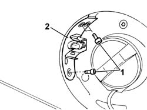
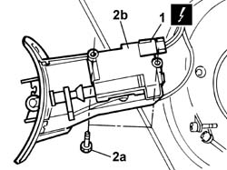

7025C40 FUEL FILLER FLAP CONTROL MOTOR - R+R AND CHECK LOCK SUPPLY LINE
- Path
- Procedures > 70 FITTINGS > 7025 COMPARTMENT LIDS > 7025C VARIOUS FLAPS (EXTERIOR) > 7025C40 FUEL FILLER FLAP CONTROL MOTOR - R+R AND CHECK LOCK SUPPLY LINE
- Kind
- repair procedure (removal / refitting; the operation number is the code)
- Applies to
- all engines; all production periods
- Interactive page
- https://sloeber94.github.io/elrnDB-aGt/en/#/125001835
Applies to: all engines; all production periods
 Removing
Removing
 Refitting
RefittingOpen the fuel filler access flap.
1. Undo the retaining bolts.
2. Extract the flap opening control actuator complete with mounting bracket/fuel flap striker.

Applies to: all engines; all production periods
1. Disconnect the electrical connector for the fuel flap opening control.
Name | Connector | |
|---|---|---|
1 | Fuel flap geared motor | See N58 FUEL FLAP LOCK GEARMOTOR |
2. Undo the fixing bolts (2a) and remove the fuel flap opening control actuator (2b).

Applies to: all engines; all production periods
Refitting
RemovingCheck the condition of the actuator.
Position the actuator on the bracket/striker and secure it using the bolts.
Connect the fuel flap opening control electrical connector.
Name | Connector | |
|---|---|---|
- | Fuel flap geared motor | See N58 FUEL FLAP LOCK GEARMOTOR |
Position the striker and actuator and secure it using the bolts.
Check that the motor is working.